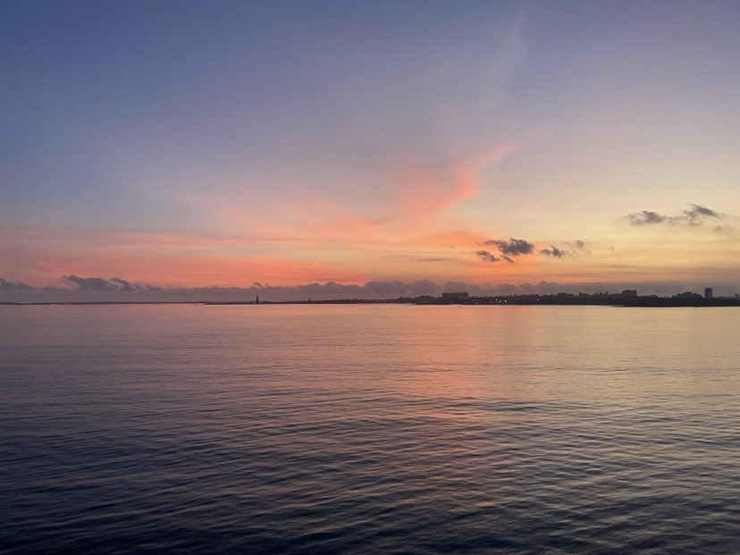

Penghu County
Basalt columns sculpted by the elements are a dominant part of the geological landscape on the Penghu Islands. The clear waters of Penghu Bay and strong winter winds have put Penghu on the map as an international hot spot for competitive sailing. The islands host brilliant firework festivals in the spring and summer, and in fall and winter visitors can enjoy the fresh and delicious catch of the sea at the Penghu Seafood Carnival. Penghu is also an excellent choice for seaside fun, with blue seas, clear skies, soft white beaches, plenty of beach and water recreation facilities, and an amazing marine ecology and scenic beauty.